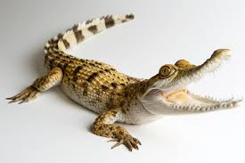
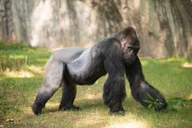
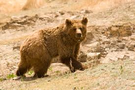

What Are Rare Species?
Rare species are those that are not commonly seen in their natural habitats. While they are not necessarily facing imminent extinction, their populations are limited, making them precious and difficult to find. These species are often difficult to study due to their elusive nature, but they still play a significant role in the ecosystem. Protecting rare animals ensures that they remain a part of our planet’s diverse biological heritage.
Vaquita
Philippine Crocodile
Gorilla
Gobi Bear